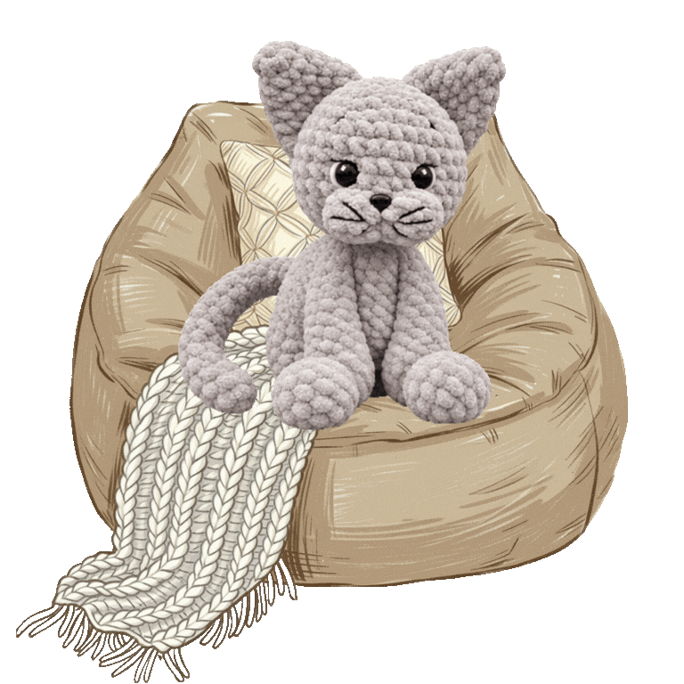
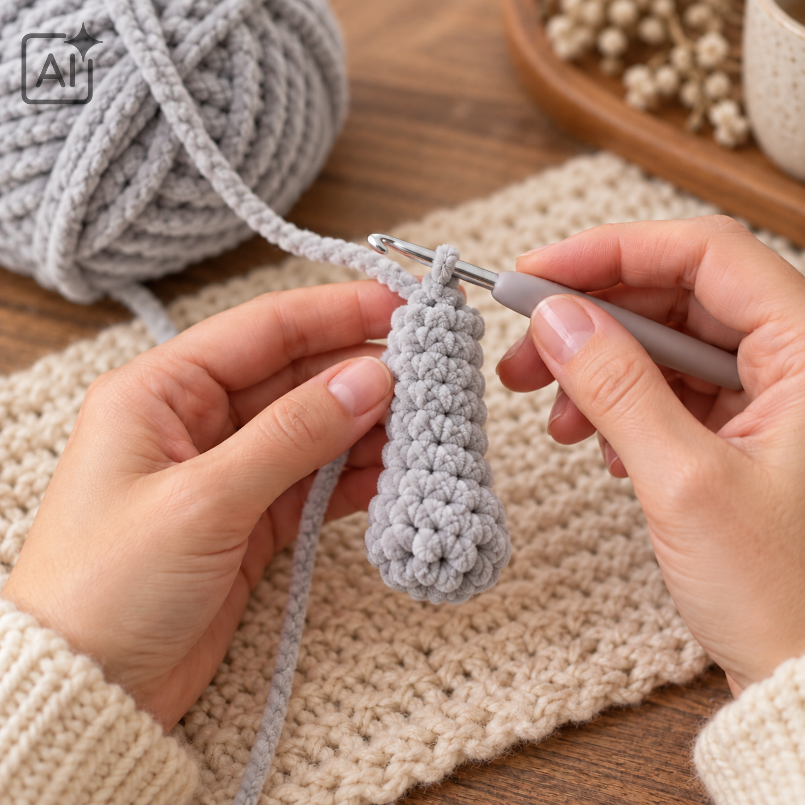
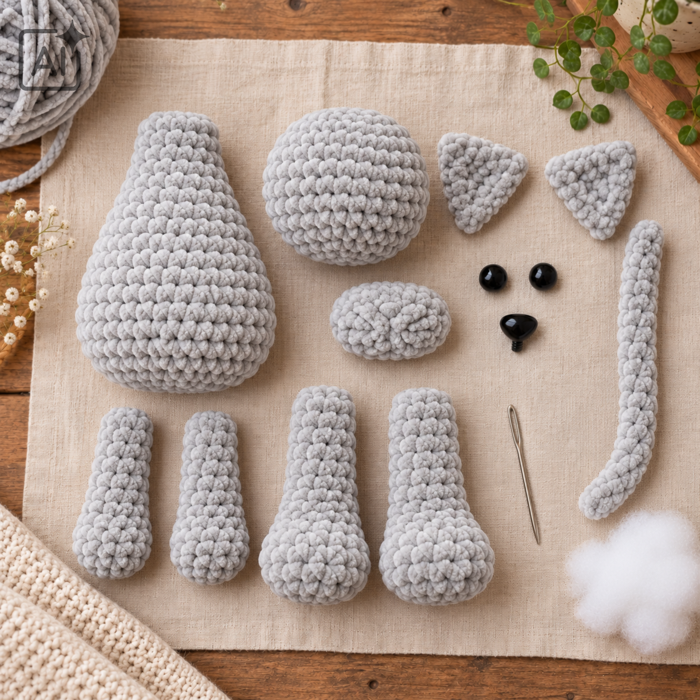
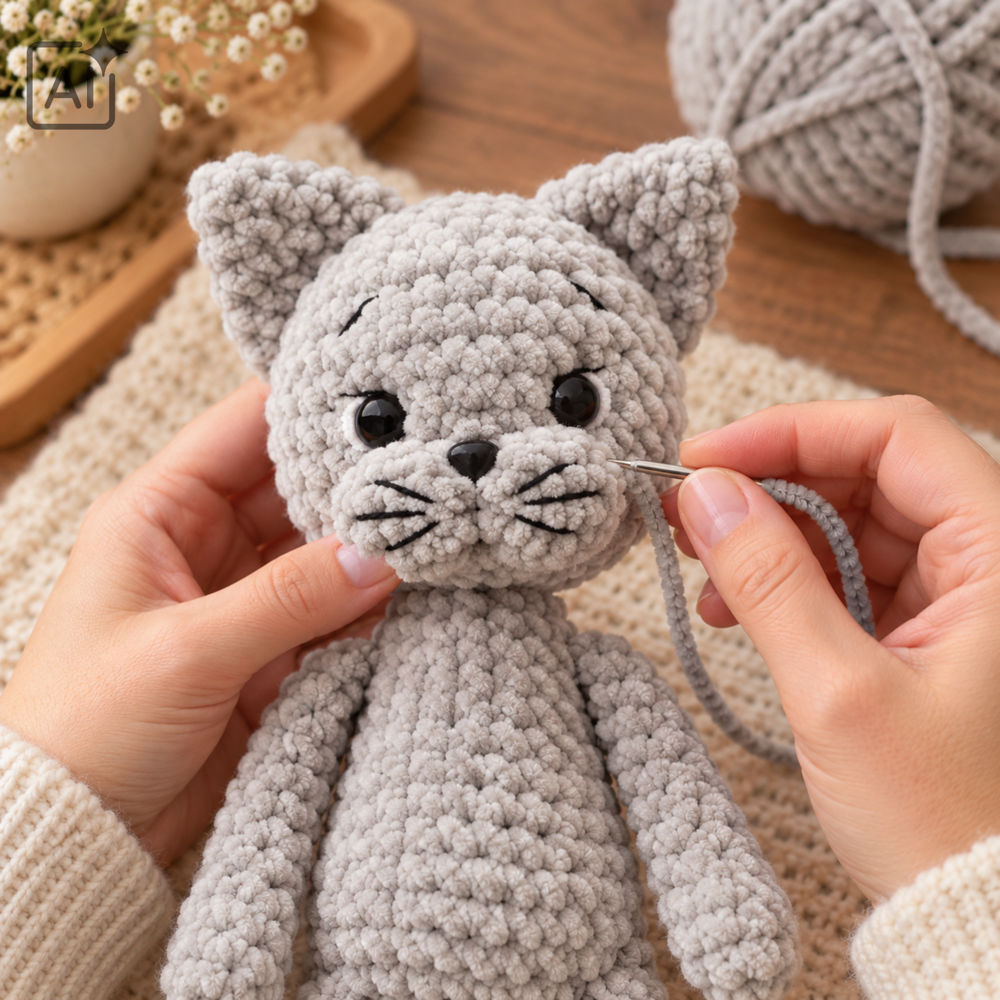

Afkortingen
- v = vaste
- mr = magische ring
- s = steek of steken
- hv = halve vaste
- l = losse
- l-boog = lossenketting
- meerd = 2 vasten in dezelfde steek
- mind = 2 vasten samenhaken
- (…) × 6 = herhaal de instructie zes keer
- [12] = het aantal steken na de toer
 Terug naar de pagina over Misty
Terug naar de pagina over Misty

Maak kennis met Misty: een zacht, grijs katje met driehoekige oren, een lange staart en een eigenwijs snoetje. Een knuffel vol karakter om zelf te haken.
Misty wordt ongeveer 30 centimeter lang. De voor- en achterpoten haak je tijdens het maken direct aan het lijf vast. De oren, snuit, kop en staart naai je daarna op hun plek.
Haak met zilvergrijs garen. Maak eerst twee voorpoten en twee achterpoten. Die haak je later direct aan het lijf vast. Haak daarbij door de laatste toer van de poot én de steek van het lijf.
De toeren en aantallen hieronder volgen het aangeleverde Kitty-patroon. Bij de snuit is de begininstructie letterlijk aangehouden; controleer daar de opgegeven aantallen extra goed.
Vul de poot licht op voordat je hem sluit. Knip de draad af en haal deze door de laatste steek.
Vul de poot voldoende op voordat je de opening sluit. Knip de draad af en haal deze door de laatste steek.
Eindig met een hv, knip het garen af en werk de draad weg. Vul het lijf. Controleer tijdens het vasthaken of de poten op hun plek zitten.
Vul de staart niet op. Eindig met een hv en laat een lange draad over om hem aan het lijf te naaien.

Eindig met een hv. Knip de draad af en laat voldoende draad over om de snuit op de kop te naaien. Let op: bij het begin van de snuit lijkt de lossenketting niet volledig aan te sluiten op de beschreven stekenverdeling. Deze instructie komt uit de bron en is niet stilzwijgend aangepast; controleer dit voordat je verder haakt.
Eindig met een hv. Knip de draad af en laat een lange draad over om het oor aan de kop te naaien. Duw het oor plat zodat het een driehoek vormt.
Eindig met een hv. Laat een lange draad over om de kop op het lijf te naaien. Vul de kop. Gebruik je kunststof veiligheidsogen of een veiligheidsneus, plaats dan de sluitingen terwijl de binnenkant nog bereikbaar is; in de bron staat het plaatsen pas bij de afwerking.
Voor kinderen jonger dan drie jaar adviseert het oorspronkelijke patroon geborduurde ogen. Borduur ook het neusje in plaats van een los kunststof onderdeel te gebruiken.
Naai de kop stevig op het lijf. Voeg voor het sluiten indien nodig vulling toe aan de aansluiting.
Naai de staart aan de achterkant van het lijf tussen toer 6 en 7.


Heel veel haakplezier met jouw eigen Misty!